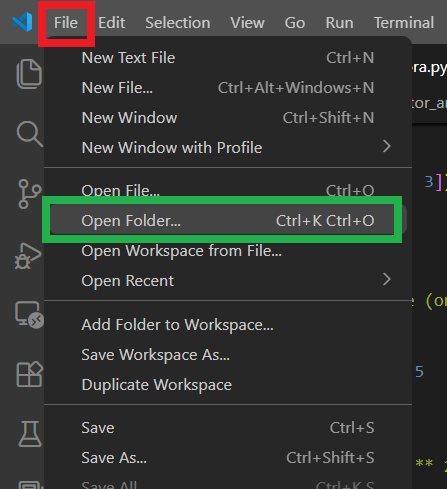
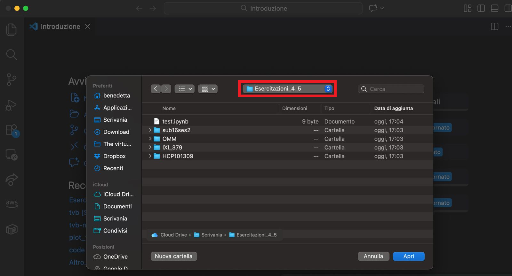
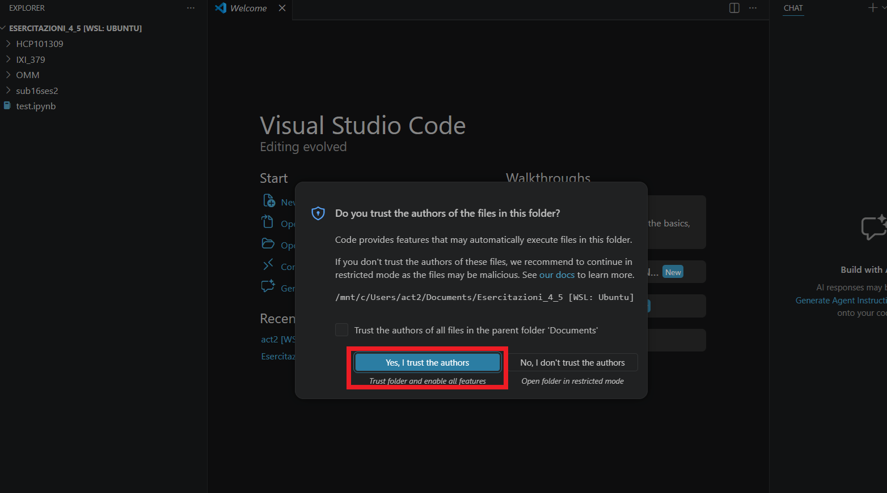
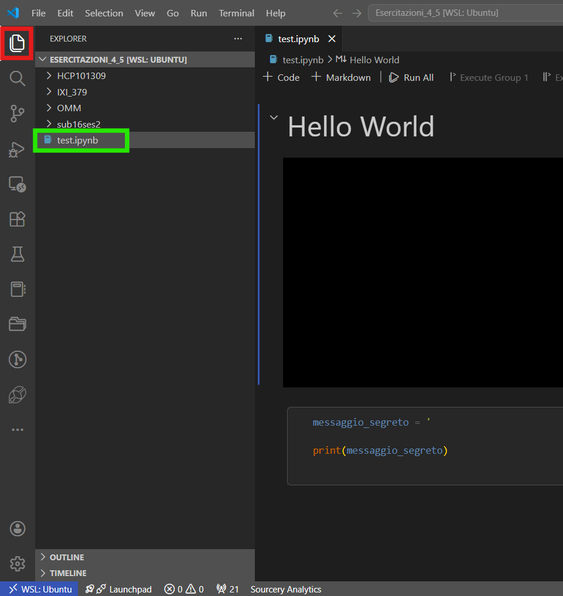
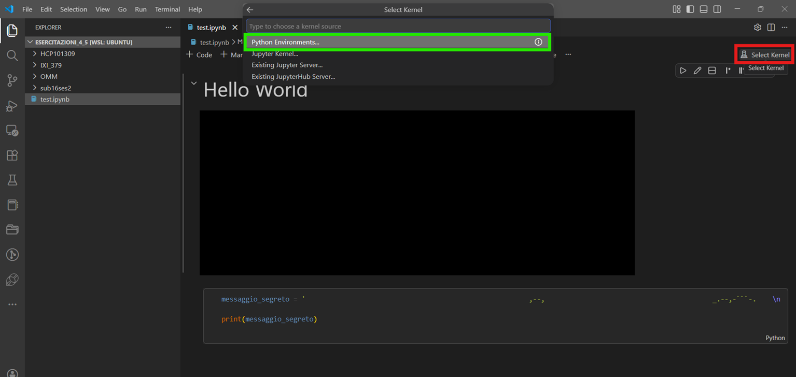
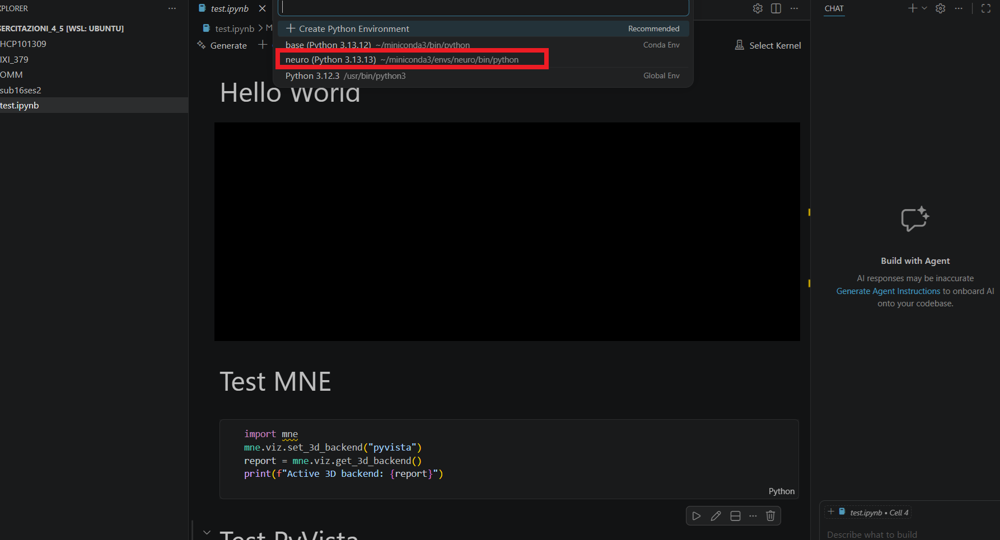
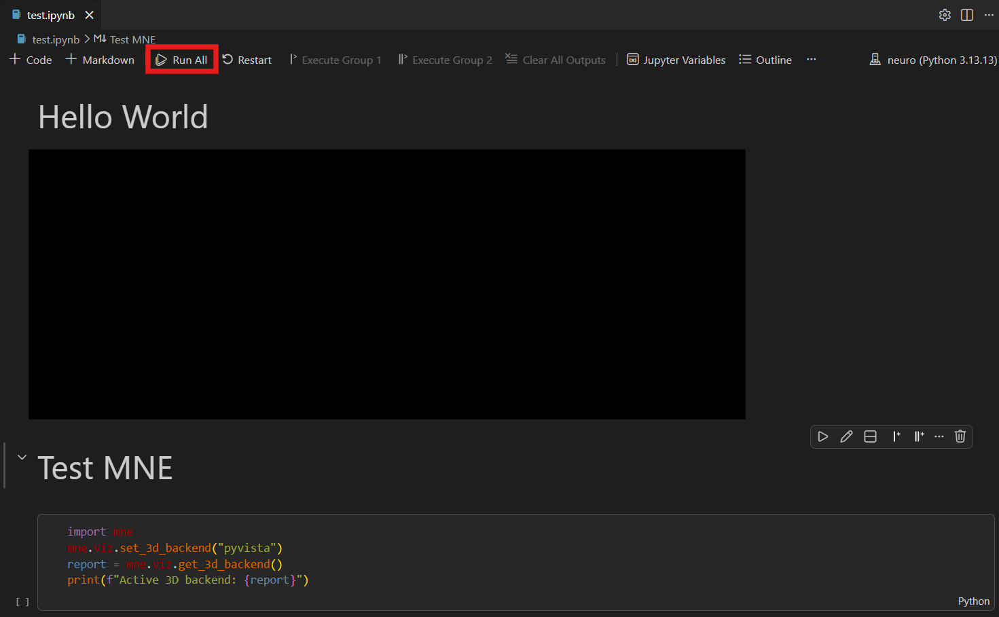
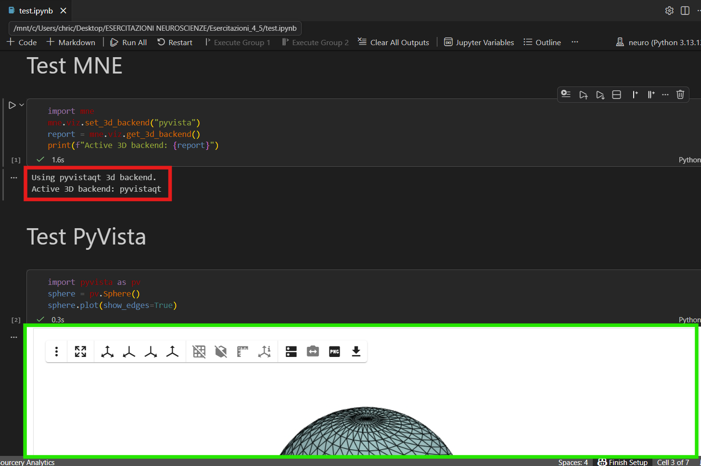

← Indietro
🚀 Lavorare in aula (macOS)
Infine, ecco i passi da seguire per avere i dati della risonanza e il notebook pronti per l'uso.
-
Scarica i dati:
Scarica il file ZIP dell'esercitazione dalla cartella condivisa del corso (Esercitazioni>Dati_Esercitazioni_4_5.zip), salvalo dove preferisci (es. sulla Scrivania) ed estrai la cartella (doppio click sul file).
Importante: NON salvare la cartella nei Download, può dare problemi strani durante l'esecuzione!
-
Apri VSCode:
Apri VSCode. Clicca su File>Apri Cartella:

Nel prompt, seleziona la cartella Esercitazioni_4_5 che hai appena estratto.

-
Apri il file di test:
Una volta aperta la cartella, dovresti vedere questi file sulla barra di sinistra. Clicca su "Yes, I trust the authors":

Apri il file `test.ipynb`:

-
Esegui il codice di test:
Clicca in alto a destra su "Seleziona Kernel" e poi Clicca su "Python Environments":

Seleziona l'environment "neuro" creato nello step precedente:

Esegui tutte le celle del notebook cliccando su "Run All":

Dovresti vedere apparire degli output come questi:

La sfera che vedi in basso è interattiva, prova a muoverla!
Se tutto è andato a buon fine, dovrebbe essere apparso un messaggio segreto in fondo alla pagina...
🎉 TUTTO PRONTO (speriamo) 🎉
Ci vediamo in aula!